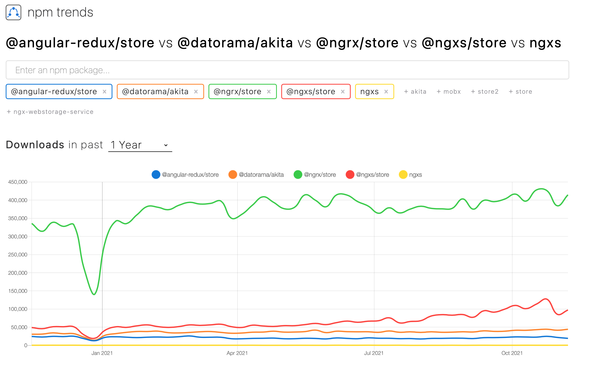

| נושא | שעה |
|---|---|
| RxJS | 9:15-9:45 |
const hot = observable.publish() ואז hot.connect() כדי להתחיל את זרימת המידעobserver.map(fn) ו-observer.scan(fn) שהן מקבילות ל-array.map(fn) ו-array.reduce(fn)observer.debounce(ms) ו-observer.throttle(ms) שהן נותנות ערכים כל ms זמן במילי שניות כאשר debounce נותן רק את האחרון אחרי ו-throttle רק את הראשון לפניnpm i rxjs"sentiment" שהוא לא "Bullish" ו-"sentiment_score" מעל 0.4. אם יש מתחת ל-3 תוצאות, לא להוציא ל-Observable
import { createSelector } from "@ngrx/store"
export interface LoginState {
firstName: string
lastName: string
email: string
}
export interface AppState {
login: LoginState
}
export const selectFeature = (state: AppState) =>
state.login
export const selectFirstName = createSelector(
selectFeature,
(state: LoginState) => state.firstName
)npx @angular/cli@12 new (Angular 13 עדיין לא נתמך ע”י ngrx, אפשר להשתמש ב-CSS רגיל ולהוסיף את ה-router)@ngrx/store ע”י npx @angular/cli add @ngrx/store@latest@ngrx/schematics ע”י npx @angular/cli add @ngrx/schematics@latest@ngrx/store-devtools ע”י npx @angular/cli add @ngrx/store-devtools@latestusername ואחד password ואחד ל-submit ותצרו action שהוא asynchronous ב-@ngrx/store עבור login כאשר success אמור להחזיר firstName, lastName ו-email@ngrx/effectimport { Injectable } from "@angular/core"
import {
Actions,
createEffect,
ofType,
} from "@ngrx/effects"
import { EMPTY } from "rxjs"
import { map, mergeMap, catchError } from "rxjs/operators"
import { MoviesService } from "./movies.service"
@Injectable()
export class MovieEffects {
loadMovies$ = createEffect(() =>
this.actions$.pipe(
ofType("[Movies Page] Load Movies"),
mergeMap(() =>
this.moviesService.getAll().pipe(
map((movies) => ({
type: "[Movies API] Movies Loaded Success",
payload: movies,
})),
catchError(() => EMPTY)
)
)
)
)
constructor(
private actions$: Actions,
private moviesService: MoviesService
) {}
}